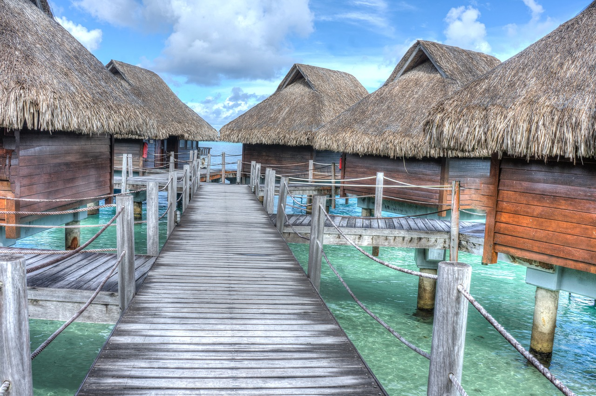

Overwater Bungalows

The island of Bora Bora has a bunch of these overwater bungalows. I've always wanted to visit these and stay in one for a little bit just to see how it is. It does seem a little scary at first, but i think it would be so cool to just wake up and then dive right into the water when you walk out of your bungalow.
Another reason i would really love to go to Bora Bora, is their beautiful sunsets. Just like the one to the right here. I love seeing island sunsets in general. I am a very beachy vibe person and the aesthetic is perfect for me.
Swimming

A third reason i would love to go to Bora Bora, is the chance to swim there. I love swimming, especially in the ocean. My family hates it because they don't know what's in the ocean; but i love the uncertainty and the adrenaline rush of swimming in potentially shark infested waters. I think seeing a shark would be exhilarating. So i would love swimming in an area like this!